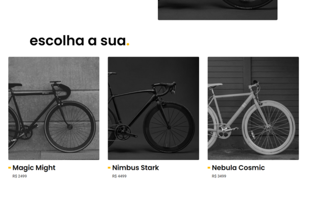
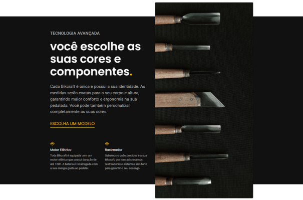
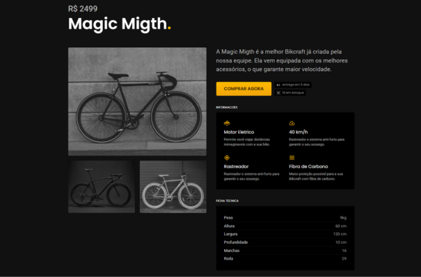
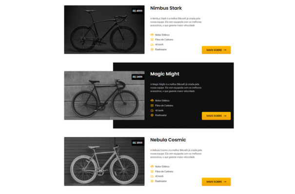

Bikcraft
O Bikcraft é um site moderno e responsivo desenvolvido para apresentar uma linha de bicicletas elétricas premium. O projeto destaca o design limpo, navegação intuitiva e foco na experiência do usuário. Foi construído com HTML, CSS e JavaScript puro, seguindo boas práticas de acessibilidade e SEO. A página “Bicicletas” apresenta os modelos disponíveis, cada um com seus diferenciais, preço e botões de ação, simulando um catálogo real de e-commerce.

Página inicial
A primeira dobra abre com a proposta do negócio — bicicletas elétricas feitas sob medida — sobre uma foto de produto em alto contraste. A chamada leva direto para a escolha do modelo, sem etapas intermediárias.

Escolha o modelo
Os três modelos aparecem lado a lado, cada um com foto, nome e preço. A comparação fica no mesmo campo de visão, o que ajuda quem ainda não decidiu.

Personalização
Seção dedicada às cores e componentes, com a lista de itens que podem ser trocados. O texto explica o que muda a cada escolha antes de o visitante entrar no configurador.

Página do produto
A ficha de um modelo reúne preço, características técnicas — motor, autonomia, rastreador, freios — e a tabela de medidas do quadro, além de fotos alternativas.

Catálogo completo
A listagem repete o mesmo bloco para cada bicicleta, com as especificações resumidas em ícones e um botão para a página individual.
Gostou do projeto? O código está aberto no GitHub.
Entrar em contato